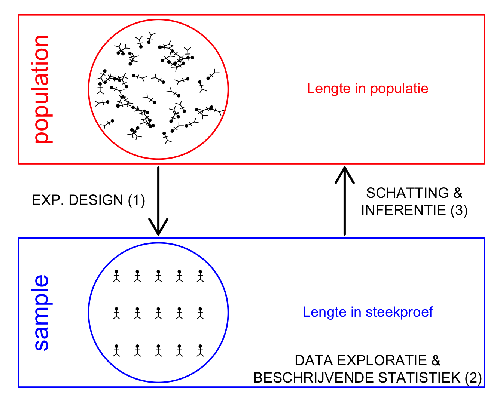
2 Belangrijke concepten & conventies
Alle kennisclips die in dit hoofdstuk zijn verwerkt kan je in deze youtube playlist vinden: Kennisclips Hoofdstuk2
Link naar webpage/script die wordt gebruikt in de kennisclips: script Hoofdstuk2
2.1 Inleiding
De verschillende stappen in een studie worden geïllustreerd in Figuur 2.1. Eerst bepaalt de onderzoeker de populatie van interesse. Gezien het om financiële en logistieke beperkingen vrijwel nooit mogelijk is om de volledige populatie te onderzoeken zal men vervolgens een steekproef nemen uit de populatie. De manier waarop een steekproef zal worden genomen wordt vastgelegd in het design van de studie. Proefopzet of studie design is een aparte tak van de statistiek en is een cruciaal onderdeel van een studie. Het studie design moet immers garanderen dat de gegevens en resultaten van de steekproef representatief zijn voor de populatie zodat de resultaten van de studie veralgemeend kunnen worden naar de populatie toe. Vervolgens wordt de studie uitgevoerd, worden de gegevens verzameld en kan de eigenlijke data-analyse van start gaan. In een eerste fase is het belangrijk om de gegevens grondig te exploreren. Data-exploratie en beschrijvende statistiek is een tweede tak van de statistiek die toelaat om gegevens van de steekproef te visualiseren, samen te vatten en om inzicht in de data te verwerven. Dat is belangrijk om de data correct te kunnen modelleren en om aannames na te kunnen gaan die nodig zijn voor de verdere data analyse. Vervolgens zullen we hetgeen we observeren in de steekproef trachten te veralgemenen naar de algemene populatie toe, zodat we algemene conclusies kunnen trekken op populatie-niveau op basis van de steekproef van de studie. Hiervoor zijn methodes nodig van de statistische besluitvorming, ook wel statistische inferentie genoemd, een derde belangrijke tak van de statistiek.
Vooraleer we dieper ingaan op studie-design, data-exploratie en statistische besluitvorming zullen we eerst enkele concepten introduceren. We doen dat in dit hoofdstuk aan de hand van de NHANES studie.
Voorbeeld 2.1 (NHANES studie)
De National Health and Nutrition Examination Survey (NHANES) wordt sinds 1960 op regelmatige basis afgenomen. In dit voorbeeld maken we gebruik van de gegevens die werden verzameld tussen 2009-2012 bij 10000 Amerikanen en die werden opgenomen in het R-pakket NHANES. Er werd een groot aantal fysieke, demografische, nutritionele, levelsstijl en gezondheidskarakteristieken gecollecteerd in deze studie (zie Tabel 2.1).
Einde voorbeeld
| ID | Gender | Height | BMI_WHO | DirectChol | SexNumPartnLife |
|---|---|---|---|---|---|
| 51624 | male | 164.7 | 30.0_plus | 1.29 | 8 |
| 51625 | male | 105.4 | 12.0_18.5 | NA | NA |
| 51630 | female | 168.4 | 30.0_plus | 1.16 | 10 |
| 51638 | male | 133.1 | 12.0_18.5 | 1.34 | NA |
| 51646 | male | 130.6 | 18.5_to_24.9 | 1.55 | NA |
| 51647 | female | 166.7 | 25.0_to_29.9 | 2.12 | 20 |
2.2 Variabelen
Een variabele is een karakteristiek (bvb. Systolische bloeddruk, leeftijd, geslacht, …) die varieert van subject tot subject (bvb. van persoon tot persoon, van dier tot dier, …) in de studie. Er zijn verschillende types variabelen.
Kwalitatieve variabelen hebben (meestal) beperkt aantal uitkomstcategorieën die niet numeriek van aard zijn. Deze worden onderverdeeld in nominale variabelen en ordinale variabelen. Nominale gegevens zijn gegevens die men kan benoemen. Ze worden niet gemeten en kennen geen natuurlijke ordening; bijvoorbeeld geslacht, ras, bloedgroep, kleur van ogen, … Ordinale variabelen kennen wel een ordening; bijvoorbeeld de BMI klasse volgens het WHO, de rokersstatus (nooit gerookt, ooit gerookt maar gestopt, actueel roker), …
Een ander type van variabelen zijn numerieke variabelen. Hierbij maakt men het onderscheid tussen numerieke discrete variabelen en numerieke continue variabelen. Numerieke discrete variabelen bestaan uit tellingen, b.v. het aantal partners die men had gedurende het leven (geregistreerd in de NHANES studie), het aantal salamanders van de species P. jordani in een bepaald gebied, het aantal reads dat mapt op een bepaald gen in een genexpressiestudie waarbij men gebruik maakt van next-generation sequencing technologie , …
Numerieke continue variabelen kunnen (tenminste in theorie) tussen bepaalde grenzen elke mogelijke waarde aannemen. Bijvoorbeeld, leeftijd is continu want het verschil in leeftijd tussen 2 personen kan in principe willekeurig klein zijn (1 uur, 1 minuut, …). Analoog zijn het gewicht, BMI, fluorescentie-metingen in een ELISA experiment, … continue metingen.
In de wetenschappen gaat men vaak continue gegevens dichotomiseren om ze nominaal te maken. Bijvoorbeeld, systolische bloeddruk wordt omgezet in hypertensie (\(>140\) mmHg) en normotensie (\(\leq 140\) mmHg). Dit vereenvoudigt de beschrijving van gegevens. Helaas is dit een slechte praktijk omdat het meestal leidt tot een aanzienlijk verlies aan informatie en omdat de aldus bekomen resultaten sterk afhankelijk kunnen zijn van de gekozen drempelwaarde. In de praktijk worden de uitkomsten van continue variabelen ook vaak afgerond zodat de vermelde waarden in feite discreet zijn. Om analoge redenen is het vaak wenselijk om ze als continue variabelen te blijven beschouwen.
In de praktijk wil men vaak numerieke rangen toekennen aan de verschillende waarden die ordinale variabelen aannemen. Bijvoorbeeld kan men ervoor kiezen de codes 1, 2 en 3 toe te kennen aan de meetwaarden nooit gerookt, ooit gerookt maar gestopt en actueel roker. Het is belangrijk om te beseffen dat de keuze van die numerieke waarden vaak geen betekenis heeft. Het verschil tussen de toegekende codes (3-2=1, 2-1=1, 3-2=1) is niet bruikbaar gezien men bijvoorbeeld niet onderstellen dat de wijziging in rokerstatus identiek is van nooit gerookt naar ooit gerookt maar gestopt (2-1=1) en van ooit gerookt maar gestopt naar actueel roker (3-2=1).
Voorbeeld 2.2 (oefening)
Geef het type aan van de variabelen in Tabel 2.1
2.3 Populatie
Het doel van een wetenschappelijke studie is nagenoeg altijd om uitspraken te doen over de algemene populatie. Stel bijvoorbeeld dat men een grenswaarde wil afleiden om patiënten met hypertensie op te sporen. Hiervoor zal men eerst de systolische bloeddruk moeten bestuderen bij een populatie van gezonde personen. Een populatie is meestal continu in verandering. Bovendien is men meestal niet alleen geïnteresseerd in effecten bij huidige subjecten, maar ook in het effect bij toekomstige subjecten. De populatie kan dus als oneindig groot worden beschouwd en is op een bepaald ogenblik zelfs niet volledig observeerbaar1. De populatie kan binnen de statistiek dus worden opgevat als een theoretisch concept die alle huidige en toekomstige subjecten omvat waarover men uitspraken wenst te doen. In de praktijk zal men dus nooit de volledige populatie kunnen bemonsteren en dient men een steekproef te nemen van de populatie. Om een representatieve groep subjecten te waarborgen, vertrekt een goede onderzoeksopzet vanuit een belangrijke, precies geformuleerde vraagstelling omtrent een duidelijk omschreven populatie. Vaak worden hierbij inclusie- en exclusiecriteria geformuleerd.
Inclusiecriteria zijn karakteristieken die een subject/experimentele eenheid moet hebben om tot de populatie te behoren, b.v.
- specifieke ziekte: hypertensie
- leeftijdscategorie
- geslacht
- …
Exclusiecriteria zijn karakteristieken die een subject/experimentele eenheid niet mag hebben om tot de populatie te behoren, b.v.
- geneesmiddelen gebruik
- andere ziekten
- zwangerschap
- …
Op de subjecten zal men meestal een aantal karakteristieken meten, ook wel variabelen genoemd (bvb. Systolische bloeddruk, leeftijd, geslacht, …). Typisch zullen deze variabelen variëren van subject tot subject (bvb. van persoon tot persoon, van dier tot dier, …) in de populatie.
2.4 Toevalsveranderlijken (of toevallige veranderlijken)
De belangrijke vraag, waar we in in de verdere hoofdstukken dieper op in zullen gaan, is hoe nauwkeurig we uitspraken kunnen doen over de populatie o.b.v. een groep gemeten subjecten in een steekproef. De spreiding op de gegevens zal daar een cruciale rol in spelen. Als de gegevens niet variëren tussen subjecten, dan zullen alle steekproeven uit de populatie hetzelfde resultaat opleveren en zullen de bekomen schattingen niet afwijken van de gezochte populatieparameters. Als daarentegen de gegevens zeer chaotisch zijn, dan zullen verschillende steekproeven mogelijks zeer verschillende resultaten opleveren, die bijgevolg ver kunnen afwijken van de gezochte populatieparameters.
Om het denkwerk te vergemakkelijken, zullen we hoofdletters gebruiken om aan te geven dat de bestudeerde karakteristiek (vb. een meetresultaat zoals systolische bloeddruk) variabel is in de populatie, zonder daarbij concreet over de gerealiseerde waarde voor een bepaald subject na te denken. Dergelijke meting of variabele \(X\) wordt algemeen een toevalsveranderlijke of toevallige veranderlijke genoemd, (a) omdat ze formeel het resultaat aanduidt van een toevallige trekking van een bepaalde karakteristiek uit de studiepopulatie en (b) omdat ze bovendien veranderlijk is, niet alle subjecten in de steekproef bezitten immers dezelfde waarde voor die karakteristiek.
Het makkelijkst om over een toevalsveranderlijke \(X\) na te denken is alsof \(X\) het label voorstelt van een bepaalde populatiekarakteristiek voor een lukraak individu uit de bestudeerde populatie, vooraleer haar concrete waarde gemeten werd. Met andere woorden, een toevalsveranderlijke \(X\) kan men opvatten als onbekende veranderlijke die een meting voorstelt die we plannen te verzamelen, maar nog niet hebben verzameld. Net zoals observaties kunnen we toevallig veranderlijken klasseren als kwalitatief, kwantitatief, discreet, continu, ….
2.5 Beschrijven van de populatie
Voor we een random variabele meten, kunnen we onmogelijk zeggen hoe hoog de meting precies zal zijn. De gerealiseerde waarde van \(X\) is dus onderhevig aan random variabiliteit. De geobserveerde steekproef in de NHANES studie \(x_1, x_2, . . . , x_{10000}\) kan dus als n = 10000 realisaties worden beschouwd van dezelfde toevallige veranderlijke X, voor subject \(i\), met \(i = 1,2,...,10000\). Een random veranderlijke, een karakteristiek van de populatie, wordt beschreven door gebruik te maken van een verdeling.
De verdeling beschrijft de waarschijnlijkheid om een bepaalde waarde te observeren voor de toevallig veranderlijke wanneer men volledig lukraak een proefpersoon kiest uit de populatie.
Als we weten hoe de variabele verdeeld is dan kunnen we probabiliteitstheorie gebruiken om de kans te berekenen dat een bepaald voorval (event) zich voordoet: vb wat is de kans dat het IQ van een random subject uit de populatie kleiner of gelijk is aan 80.
Notatie:
- Event: \(X \leq 80\)
- Probabiliteit op event: \(Pr(X \leq 80)\)
2.5.1 Intermezzo probabiliteitstheorie
2.5.1.1 Discrete toevallig veranderlijken
Stel dat we een discrete random variabele meten \(X\). Alle mogelijke waarden voor \(X\) worden de steekproefruimte \(\Omega\) genoemd.
Voor Gender is de steekproefruimte \(\Omega=(0,1)\) met 0 (vrouw) of 1 (man).
Voor het werpen van een dobbelsteen is de steekproefruimte \(\Omega=(1,2,3,4,5,6)\).
Een event \(A\) is een subset van de steekproefruimte
- Een even getal werpen met een dobbelsteen: \(A=(2,4,6)\).
- Kan ook een specifieke waarde zijn \(A=(1)\).
Event ruimte \(\mathcal{A}\) is de klasse van alle mogelijke events die kunnen optreden bij een bepaald experiment.
Twee events (\(A_1\) en \(A_2\)) zijn mutueel exclusief als ze niet samen op kunnen treden.
- v.b. event van de oneven getallen \(A_1=(1,3,5)\) en het event om \(A_2=(6)\) te gooien.
- Dus \(A_1 \bigcap A_2=\emptyset\).
Probabiliteit \(Pr(A)\) is een function \(Pr: A \rightarrow [0,1]\) die voldoet aan
- \(Pr(A) \geq 0\) en \(Pr(A) \leq 1\) voor elke \(A \in \mathcal{A}\).
- \(Pr(\Omega)=1\).
- Voor mutueel exclusieve events \(A_1, A_2, \ldots A_k\) geldt dat \(Pr(A_1 \cup A_2 \ldots \cup A_k)= Pr(A_1) + \ldots + Pr(A_k)\).
Dobbelsteen voorbeeld
- oneven number \(A=(1,3,5)\): is de unie van 3 mutueel exclusieve events \(A_1=1\), \(A_2=3\) en \(A_3=5\) zodat \(Pr(A)=Pr(1)+Pr(3)+Pr(5)=1/6+1/6+1/6=0.5\)
- \(\Omega=(1,2,3,4,5,6)\): \(Pr(\Omega)=1\)
Als we twee subjecten (j en k) onafhankelijk trekken van de populatie dan is de gezamelijke probabiliteit \(P(X_j,X_k)= P(X_j)P(X_k)\)
2.5.1.1.1 Verdeling
De verdeling van een discrete toevallig veranderlijke \(X\) beschrijft de kans op elke mogelijke waarde van de steekproefruimte.
Voorbeeld: Gender is een binaire variabele (0: vrouw, 1: man) en binaire variabelen volgen een Bernoulli verdeling. 50.8% van de subjecten in de Amerikaanse populatie zijn vrouw en 49.2% is man.
Laat \(\pi\) de probabiliteit zijn op een man \(\pi=0.492\). \[ X\sim \left \{ \begin{array}{lcl} P(X=0) &=& 1-\pi\\ P(X=1) &=& \pi \end{array} \right . \]
tibble(X=c(0,1),prob=c(0.508,0.492)) |>
ggplot(aes(x=X,xend=X,y=0,yend=prob)) +
geom_segment() +
ylab("Probability")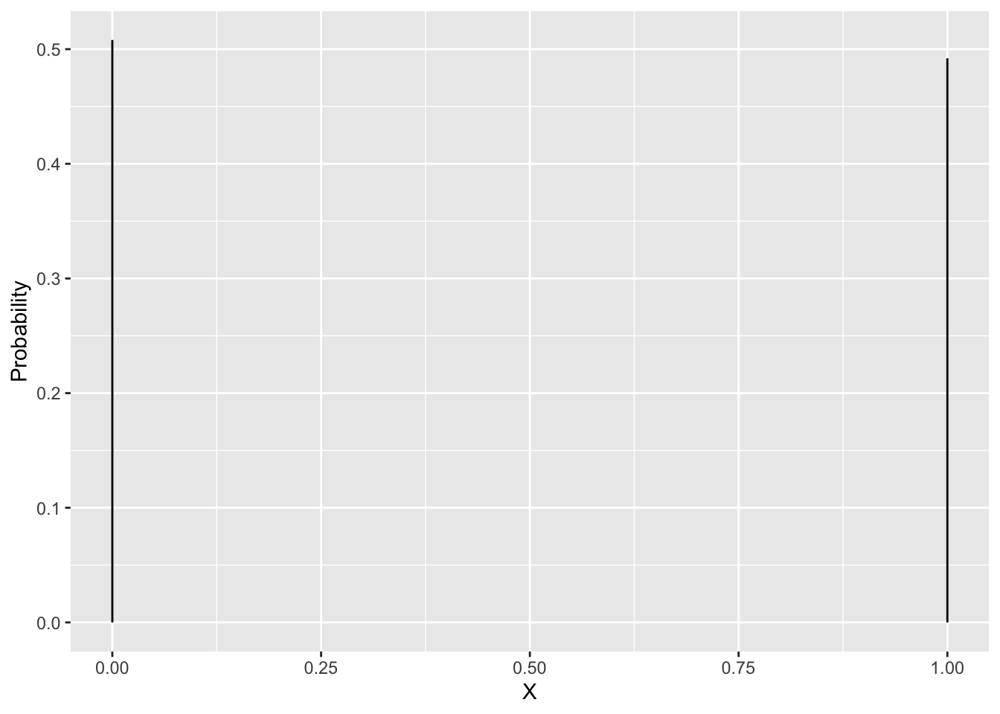
Toevallig veranderlijke \(X\) volgt een Bernoulli verdeling \(B(\pi)\) met parameter \(\pi=0.492\), \[B(\pi)= \pi^x(1-\pi)^{(1-x)}\]
2.5.1.1.2 Cumulatieve distributie functie
De cumulatieve distributie functie F(x) geeft de probabiliteit weer om een toevallige veranderlijke X te observeren waarvoor geldt dat \(X\leq x\): \[ F(x) = \sum\limits_{\forall X\leq x} P(x)\]
Gender voorbeeld \(F(0)=1-\pi\) en \(F(1)= P(X=0) + P(X=1)=1\)
tibble(X=c(-0.5,0,1,1.5),cumprob=c(0,0.508,1,1)) |>
ggplot(aes(x=X,y=cumprob)) +
geom_step(direction="hv") +
ylab("F(x)")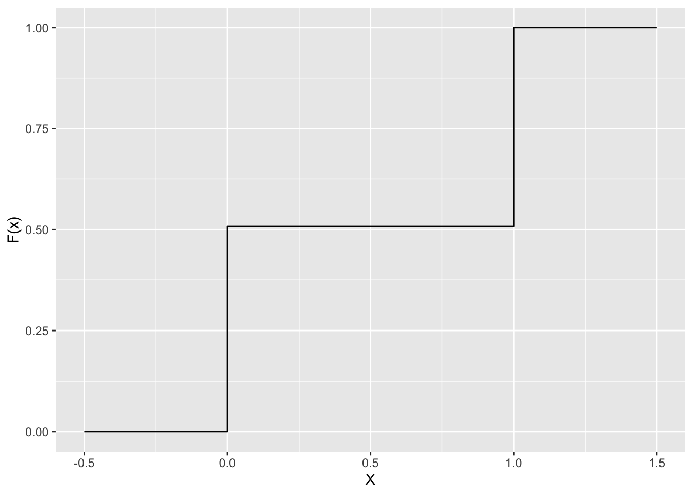
Dobbelsteen voorbeeld:
tibble(X=c(0.5,1:6,6.5),cumprob=c(0,cumsum(rep(1/6,6)),1)) |>
ggplot(aes(x=X,y=cumprob)) +
geom_step(direction="hv") +
ylab("F(x)")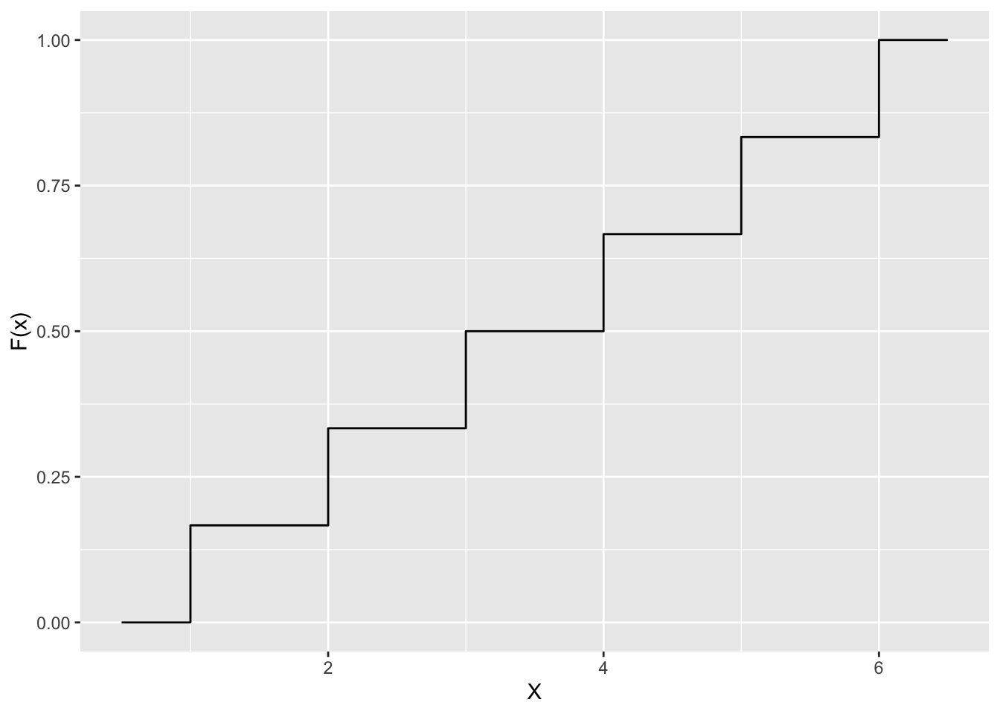
2.5.1.1.3 Gemiddelde
Het gemiddelde of de verwachte waarde \(E[X]\) van een discrete toevallig veranderlijke \(X\) is gegeven door:
\[E[X]=\sum\limits_{x\in\Omega} x P(X=x)\]
Merk op dat de operator \(E[.]\) staat voor de verwachte waarde van een toevallige veranderlijke of een functie van toevallig veranderlijken.
Gender voorbeeld
\[E[X]= 0 \times (1-\pi) + 1 \times (\pi) = \pi\]
Het gemiddelde is \(E[X]=0.492\).
Dobbelsteen voorbeeld
\[E[X]= 1 \times \frac{1}{6} + 2 \times \frac{1}{6} + \ldots + 6 \times \frac{1}{6} = 3.5\]
2.5.1.1.4 Variantie
De variantie is een maat voor de variabiliteit van een toevallig veranderlijke en wordt gegeven door:
\[E[(X-E[X])^2]=\sum\limits_{x\in\Omega} (x-E[X])^2 P(X=x)\]
Het is dus de verwachte waarde van de kwadratische afwijkingen van een toevallig veranderlijke rond zijn gemiddelde en is dus een maat voor de variabiliteit of spreiding van de toevallige veranderlijke.
Gender voorbeeld \[\begin{eqnarray} E[(X-E[X])^2]&=&(0-\pi)^2\times (1-\pi)+(1-\pi)^2 \times \pi\\ &=& \pi^2 (1-\pi) + (1-\pi)^2 \pi\\ &=&\pi (1-\pi)(\pi+1-\pi)\\ &=&\pi(1-\pi) \end{eqnarray}\]
2.5.1.2 Continue toevallig veranderlijke
Een continue toevallig veranderlijke kan binnen bepaalde grenzen alle mogelijke waarden aannemen. De kans dat een continue toevallige veranderlijke exact één bepaalde waarde aanneemt is daarom gelijk aan 0.
De verdeling wordt daarom weergegeven a.d.h.v. de densiteitsfunctie of de dichtheidsfunctie \(f(x)\)
Veel biologische karakteristieken zijn approximatief normaal verdeeld (lengte, bloeddruk, IQ, concentratie metingen na logaritmische transformatie)
\[f(x) = \frac{1}{\sqrt{2\pi\sigma^2}} e^{-\frac{(x-\mu)^2}{2\sigma^2}}\]
Dat wordt kort genoteerd als
\[f(x) = N(\mu,\sigma^2)\]
Van het IQ is geweten dat het normale verdeling volgt met gemiddelde \(\mu=100\) en standaardafwijking \(\sigma=15\).
\[IQ \sim N(100,15^2)\]
In R kunnen we de dnorm functie gebruiken om de densiteit te berekenen voor een bepaalde waarde X=x.
- De argumenten van
dnormzijnmean(\(\mu\)) ensd(standaardafwijking \(\sigma\)).
iq <- tibble(
IQ = seq(40,150,.1),
Densiteit = dnorm(seq(40,150,.1),mean=100,sd=15)
)
iq |>
ggplot(aes(x=IQ,y=Densiteit)) +
geom_line()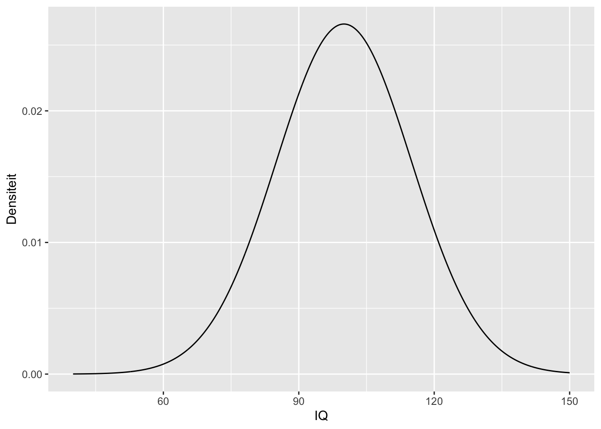
Binnen bepaalde grenzen kunnen continue toevallig veranderlijken alle mogelijke waarden aannemen dus is \(\Omega\) oneindig groot.
2.5.1.2.1 Cumulatieve distributie
Opnieuw is de cumulatieve distributie
\[F(X)=Pr(X\leq x).\]
Omdat X continu is berekenen we deze probabiliteit a.d.h.v. een integraal
\[F(x)=\int \limits_{-\infty}^x f(x) dx\]
Merk op dat \(f(x)=0\) als x niet tot de steekproefruimte behoort.
We kunnen \(F(x)\) berekenen voor een normaal verdeelde toevallig veranderlijke met de functie pnorm die opnieuw argumenten mean en sd heeft.
iq |>
mutate(Probability=pnorm(IQ,mean=100,sd=15)) |>
ggplot(aes(x=IQ,y=Probability)) +
geom_line()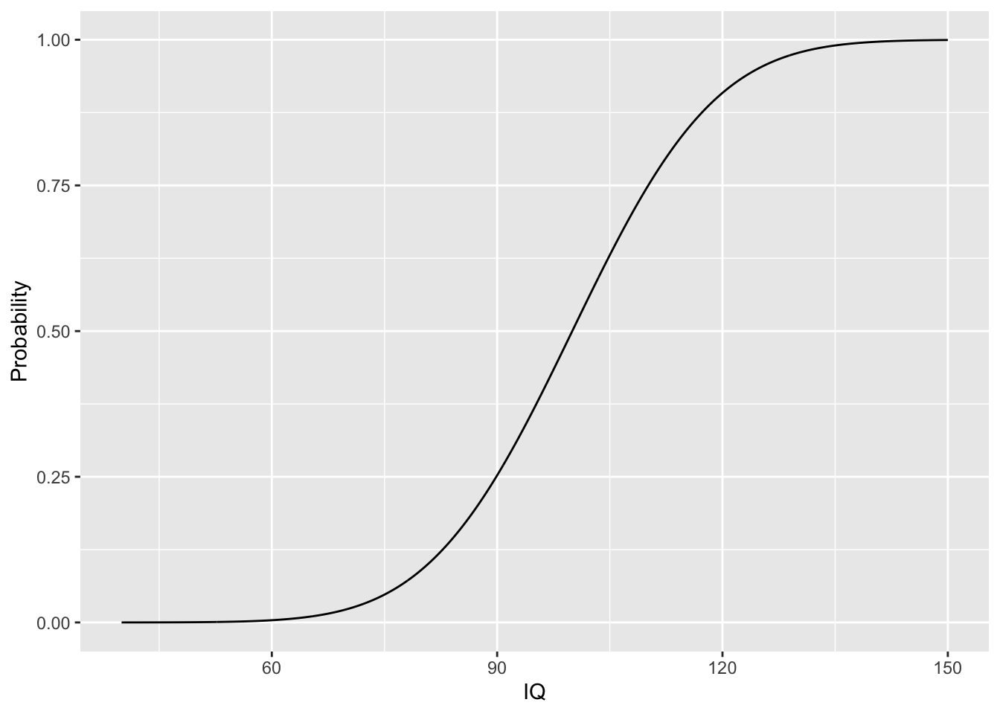
De probabiliteit dat het IQ van een random subject lager is dan 80 wordt in R berekend door
pnorm(80,mean=100,sd=15)[1] 0.09121122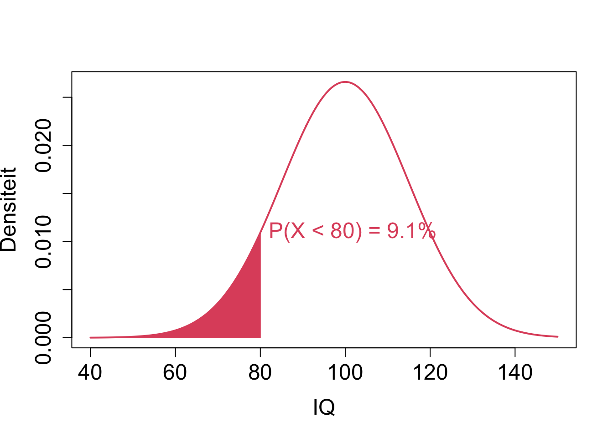
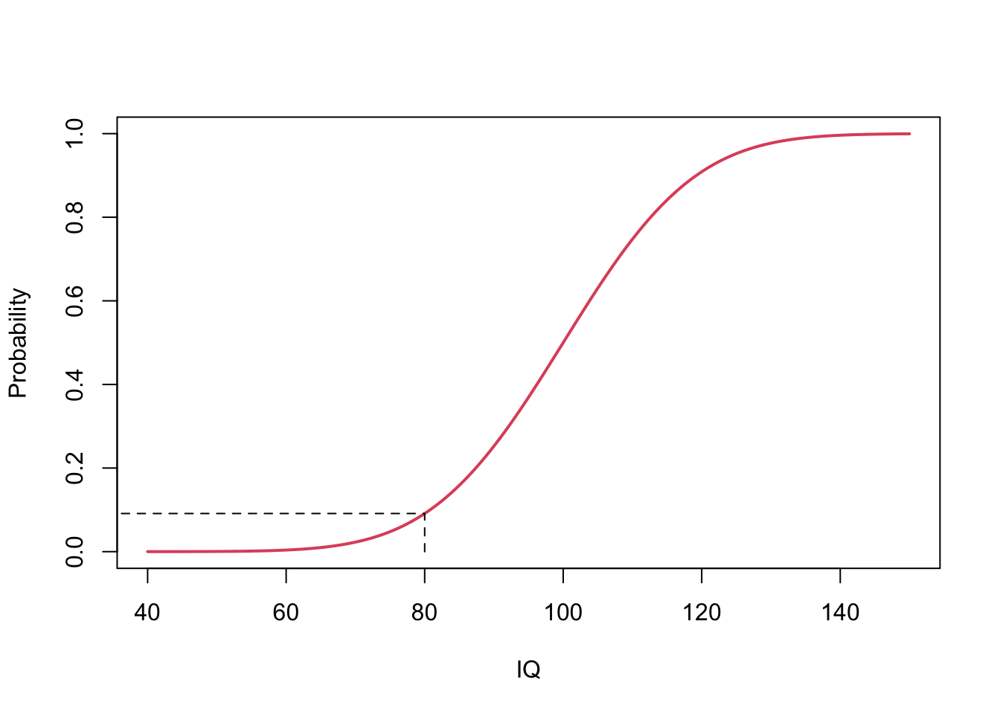
Voor de grootst mogelijke waarde voor \(X\) integreren we over de volledige steekproefruimte \(\Omega\) dus
\[\int \limits_{x \in \Omega} f(x) dx=1.\]
De oppervlakte onder de dichtheidsfunctie is dus steeds 1!
2.5.1.2.2 Gemiddelde en variantie
Het gemiddelde of de verwachte waarde is
\[\int \limits_{x \in \Omega} x f(x) dx.\]
Voor de normale verdeling
\[\int \limits_{-\infty}^{+\infty} x f(x) dx = \mu.\]
De parameter \(\mu\) is dus het gemiddelde van een Normaal verdeelde veranderlijke X in de populatie.
De variantie \(E[(X-E[X])^2]\)
\[\int \limits_{x \in \Omega} (x-E[X])^2 f(x) dx\]
Voor de normale verdeling bekomen we
\[\int \limits_{-\infty}^{+\infty} (x-\mu)^2 f(x) dx = \sigma^2\]
De parameter \(\sigma^2\) is dus de variantie van een Normaal verdeelde veranderlijke X in de populatie.
Het is vaak moeilijk om de variantie te interpreteren gezien ze niet in de zelfde eenheden staat als het gemiddelde. Daarom werken we vaak met de standaardafwijking (SD):
\[SD=\sqrt{E[(X-E[X])^2]}\]
De standaardafwijking voor de normale verdeling, \(\sigma\) heeft de interessante interpretatie dat ongeveer 68% van de populatie een waarde heeft voor de karakteristiek X binnen het interval van 1 standaardafwijking(\(\sigma\)) rond het gemiddelde:
\[P(\mu-\sigma < X < \mu + \sigma) \approx 0.68\]
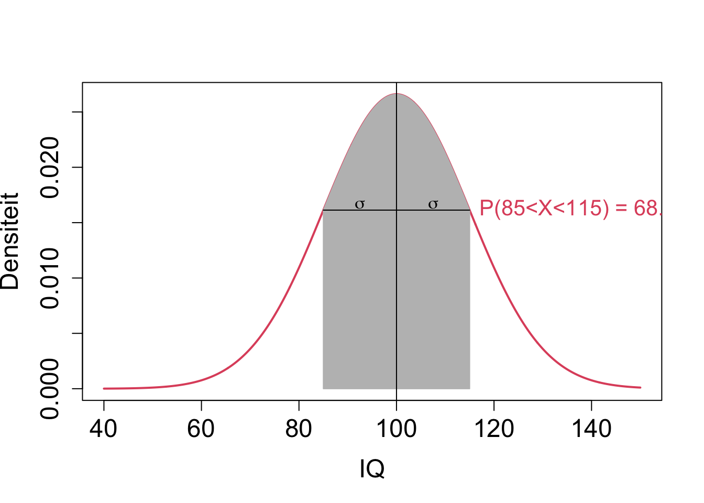
Voor Normaal verdeelde toevallig veranderlijken heeft ongeveer 95% van de subjecten in de populatie een waarde die binnen twee standaardafwijkingen (\(2 \sigma\)) ligt van het gemiddelde.
\[P[\mu - 2 \sigma < X < \mu + 2 \sigma]\approx 0.95\]
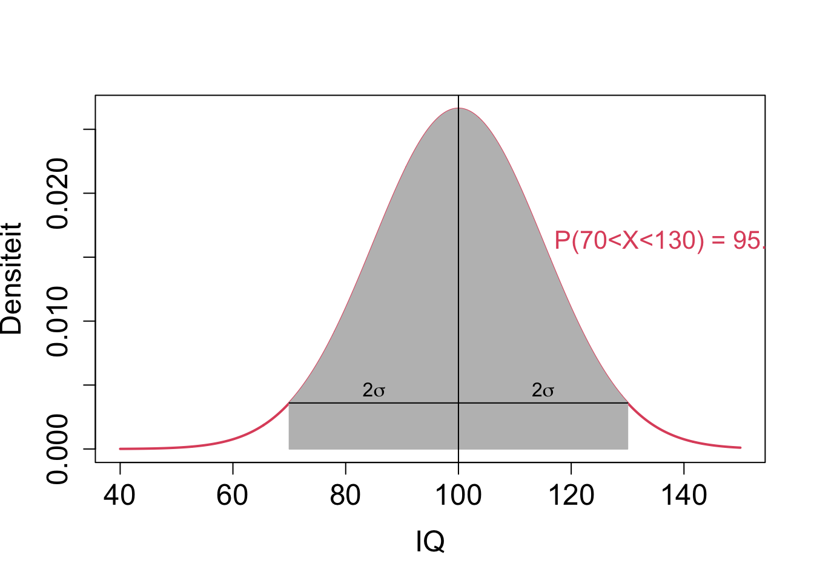
Deze intervallen worden ook wel een referentie interval genoemd.
2.5.2 Standaardisatie
Normale data worden vaak gestandaardiseerd.
\[z=\frac{x-\mu}{\sigma}\]
Na standaardisatie volgen de data een standaard Normaal verdeling met gemiddelde \(\mu=0\) en variantie \(\sigma^2=1\): \[z \sim N(0,1)\]
We kunnen de qnorm functie gebruiken om kwantielen \(z_{2.5\%}\) en \(z_{97.5\%}\) te berekenen die respectievelijk corresponderen met \(F(z_{2.5\%})=0.025\) en \(F(z_{97.5\%})=0.975\).
qnorm(0.025)[1] -1.959964qnorm(0.975)[1] 1.959964Voor een standaard Normaal verdeelde toevallig veranderlijke valt inderdaad ongeveer \(0.975 - 0.025=0.95\) van de waarden binnen het interval [-2,2], of binnen 2 standaardafwijkingen (\(\sigma=1\)) van het gemiddelde (\(\mu=0\)).
2.5.3 Achtergrond Normale verdeling
De Normale curve of Normale dichtheidsfunctie wordt gegeven door:
\[\begin{equation*} f(x) = \frac{1}{\sigma \sqrt{2 \pi} } \exp \left ( - \frac{ (x - \mu)^2 }{ 2 \sigma^2} \right ). \end{equation*}\]
Ze wordt beschreven door 2 onbekende parameters \(\mu\) en \(\sigma\), waarbij \(\mu\) het gemiddelde van de verdeling van de observaties aangeeft en \(\sigma\) de standaarddeviatie. Deze curve geeft voor elke waarde \(x\) weer hoe frequent deze waarde, relatief gezien, voorkomt. De notatie \(\pi\) verwijst naar het getal \(\pi=3.1459...\) Wanneer het gemiddelde 0 is en de variantie 1, spreekt men van de standaardnormale curve of standaardnormale dichtheidsfunctie.
Een lukrake observatie uit een reeks gegevens wiens verdeling de Normale curve volgt, wordt een Normaal verdeelde observatie genoemd. Dergelijke observaties komen frequent voor: voor heel wat reeksen gegevens die symmetrisch verdeeld zijn, vormt de Normale curve met \(\mu\) gelijk aan \(\bar x\) en \(\sigma\) gelijk aan \(s_x\) immers een goede benadering voor het histogram.
Voor Normaal verdeelde gegevens geeft de oppervlakte onder de Normale curve tussen 2 willekeurige getallen \(a\) en \(b\) het percentage van de observaties weer dat tussen deze 2 getallen gelegen is. Op die manier laat de Normale curve toe om, enkel op basis van kennis van het gemiddelde en de standaarddeviatie, na te gaan welk percentage van de gegevens bij benadering tussen 2 willekeurige getallen \(a\) en \(b\) gelegen is.
Om deze berekening uit te voeren, gaan we als volgt te werk. Zij \(X\) een lukrake meting uit een reeks Normaal verdeelde gegevens met gemiddelde \(\mu\) en standaarddeviatie \(\sigma\). Dan noteren we met \(P(X\leq b)\) de oppervlakte onder de Normale curve die links van \(b\) gelegen is, en met \(P(a\leq X\leq b)\) de oppervlakte onder de Normale curve tussen \(a\) en \(b\). Hierbij is2
\[\begin{equation*} P(a\leq X\leq b)=P(X\leq b)-P(X\leq a) \end{equation*}\]
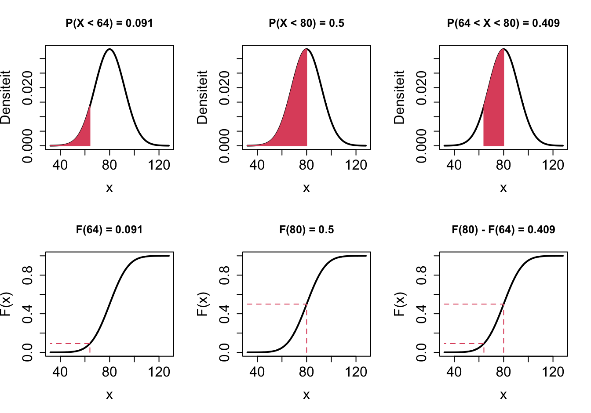
Om \(P(a\leq X\leq b)\) te berekenen, hebben we dus enkel een strategie nodig om voor een willekeurig getal \(x\), het getal \(F(x) = P(X \leq x)\) uit te rekenen. Dit staat uitgezet in functie van \(x\) in Figuur 2.2 voor \(\mu=80\) en \(\sigma=12\) en wordt een distributiefunctie genoemd.
Definitie 2.1 (distributiefunctie)
De functie die voor elk getal \(x\) uitdrukt wat de kans is dat een lukrake meting \(X\) met gekende verdeling (bvb. een Normale verdeling) kleiner of gelijk is aan \(x\), wordt de distributiefunctie van die verdeling genoemd.
Einde definitie
Omdat de Normale dichtheidsfunctie zeer complex is, blijkt dat het getal \(F(x)\) niet expliciet uit te rekenen is. Om die reden heeft men de getallen \(F(x)\) voor de standaardnormale verdelingsfunctie getabuleerd. Voor deze standaardnormale curve duidt men voor een willekeurige waarde \(z\), het getal \(F(z)\) met \(\Phi(z)\) aan. Omwille van de symmetrie rond 0 van de standaardnormale curve kan de waarde van \(\Phi(-z)\) dan uit de waarde van \(\Phi(z)\) worden afgeleid als
\[\begin{equation*} \Phi(-z)= 1- \Phi(z) \end{equation*}\]
Deze uitdrukking geeft aan dat voor een reeks standaardnormaal verdeelde metingen, het percentage dat kleiner is dan \(-z\) gelijk is aan het percentage dat groter is dan \(z\).
Om nu \(P(a\leq X\leq b)\) te berekenen op basis van de tabellen voor de standaardnormale verdeling gaan we als volgt te werk. Vooreerst kan men aantonen dat het resultaat van een lineaire transformatie \(aX+b\) op een Normaal verdeelde meting \(X\) met gemiddelde \(\mu\) en standaarddeviatie \(\sigma\) terug een Normaal verdeelde toevalsveranderlijke is, maar nu met gemiddelde \(a\mu+b\) en standaarddeviatie \(|a|\sigma\). Op die manier kan men elke Normaal verdeelde meting met gemiddelde \(\mu\) en standaarddeviatie \(\sigma\) omzetten naar een standaardnormale meting door ze als volgt te standaardiseren:
\[\begin{equation*} Z = \frac{X- \mu}{\sigma} \end{equation*}\]
Verifieer dat \(Z\) inderdaad gemiddelde 0 en standaarddeviatie 1 heeft!
Aangezien voor een willekeurig getal \(x\)
\[\begin{equation*} X\leq x \Leftrightarrow \frac{X-\mu}{\sigma} \leq \frac{x-\mu}{\sigma} \end{equation*}\]
vinden we nu dat
\[\begin{eqnarray*} P(a \leq X \leq b) & = & P\left(\frac{a-\mu}{\sigma} \leq Z \leq \frac{b-\mu% }{\sigma} \right) \\ & = & \Phi \left (\frac{b-\mu}{\sigma} \right ) - \Phi \left (\frac{a-\mu}{% \sigma} \right ) \end{eqnarray*}\]
De getallen \(\Phi \left (\frac{b-\mu}{\sigma} \right )\) en \(\Phi \left (\frac{a-\mu}{\sigma} \right )\) kunnen hierbij rechtstreeks uit tabellen of R software worden gehaald. In het vervolg zullen we algemeen de notatie \(Z\) gebruiken om een standaardnormaal verdeelde meting aan te duiden.
Oefening 2.1
Een labo bepaalt in een visstaal Hg via een methode op basis van Atomaire Absorptiespectrometrie. In werkelijkheid bevat het staal (gemiddeld) 1.90 ppm. De meetmethode is echter niet perfect, zoals aangegeven door een standaarddeviatie van 0.10 ppm. Wat is de kans dat de laborant die het staal onderzoekt, een meetresultaat van 2.10 ppm of meer vaststelt?
Om op deze vraag te antwoorden, noteren we met \(X\) het meetresultaat van de laborant en berekenen we
\[\begin{eqnarray*} P(X\geq 2)&=&P\left(\frac{X-\mu}{\sigma}\geq \frac{2.1-1.9}{0.1}\right) \\ &=&P(Z\geq 2) = 2.28\% \end{eqnarray*}\]
We besluiten dat er 2.28% kans is dat de laborant een meetresultaat van minstens 2.10 ppm zal vaststellen. In R kan dit resultaat als volgt bekomen worden:
1 - pnorm(2.1, mean = 1.9, sd = 0.1)[1] 0.02275013waarbij de functie pnorm de distributiefunctie van de Normale verdeling voorstelt.
Einde oefening
Met \(z_{\alpha}\) duiden3 we die waarde aan waar \(\alpha100\%\) van de oppervlakte onder de standaardnormale curve rechts van zit; m.a.w. waarvoor geldt dat \(P(Z \geq z_{\alpha}) = \alpha\). Als \(Z\) een standaardnormaal verdeelde meting is, dan stelt \(z_{\alpha}\) bijgevolg het \((1-\alpha)100\%\) percentiel van die verdeling voor. Voor \(z_{\alpha/2}\) geldt dat \(P(-z_{\alpha/2}\leq Z \leq z_{\alpha/2}) = 1-\alpha\). Bijvoorbeeld, \(P( - z_{0.025}\leq Z \leq z_{0.025}) = 95\%\). Voor een reeks standaardnormaal verdeelde metingen bevat het interval \([-z_{\alpha/2},z_{\alpha/2}]\) dus \((1-\alpha)100\%\) van de observaties.
Stel dat \(X\) een Normaal verdeelde meting is met gemiddelde \(\mu\) en standaarddeviatie \(\sigma\). Dan geldt dat
\[\begin{equation*} P\left( - z_{\alpha/2}\leq \frac{X - \mu}{\sigma} \leq z_{\alpha/2}\right) = 1-\alpha . \end{equation*}\]
Hieruit volgt dat
\[\begin{equation*} P( \mu - z_{\alpha/2} \sigma \leq X \leq \mu + z_{\alpha/2} \sigma ) = 1-\alpha . \end{equation*}\]
Voor een reeks Normaal verdeelde metingen met gemiddelde \(\mu\) en standaarddeviatie \(\sigma\) bevat het interval \([\mu-z_{\alpha/2}\sigma,\mu+z_{\alpha/2}\sigma]\) dus \((1-\alpha)100\%\) van de observaties. In de praktijk worden de parameters \(\mu\) en \(\sigma\) hierbij vervangen door \(\bar x\) en \(s_x\).
Het resulterende interval \([\bar x-z_{\alpha/2}s_x,\bar x+z_{\alpha/2}s_x]\) wordt vaak gebruikt4, o.a. in de klinische chemie, om referentie-intervallen te berekenen voor een test ter opsporing van een bepaalde pathologie. Eenmaal zo’n referentie-interval, ook wel normaal interval genoemd, werd bepaald, wordt het testresultaat van een patiënt met de vermoede pathologie vergeleken met het interval. Een resultaat buiten het interval is dan indicatief voor de aanwezigheid van de pathologie.
Bij het bepalen van referentie-intervallen is het noodzakelijk om de methode eerst te testen bij mensen zonder de pathologie in kwestie. Voor dit doel worden “normale en gezonde vrijwilligers” aangezocht. Vaak worden hiertoe collega’s genomen uit het laboratorium dat de test heeft ontwikkeld, hoewel dit allesbehalve ideaal is. Immers, mensen die in een zelfde laboratorium werken, zijn blootgesteld aan dezelfde werkomgeving, die op zijn beurt een invloed kan hebben op hun bloedsamenstelling. Bijgevolg is de bloedsamenstelling van de studiepersonen mogelijks niet representatief voor een normale, gezonde populatie, hetgeen kan leiden tot vertekende referentie-intervallen. In deze cursus zullen we een referentie-interval meer algemeen als volgt definiëren.
Definitie 2.2 (referentie-interval)
Een \((1-\alpha)100\%\) referentie-interval voor een veranderlijke \(X\) (bvb. albumine-concentratie in het bloed) in een gegeven studiepopulatie (bvb. volwassen Belgen onder de 60 jaar) is een interval dat zó gekozen werd dat het met \((1-\alpha)100\%\) kans de observatie voor een lukraak individu uit die populatie bevat. Voor een Normaal verdeelde veranderlijke \(X\) met gemiddelde \(\mu\) en standaarddeviatie \(\sigma\) kan dit berekend worden als
\[\begin{equation*} [\mu-z_{\alpha/2}\sigma,\mu+z_{\alpha/2}\sigma] \end{equation*}\]
en geschat worden op basis van een lukrake steekproef als
\[\begin{equation*} [\bar x-z_{\alpha/2}s_x,\bar x+z_{\alpha/2}s_x] \end{equation*}\]
Einde definitie
2.6 Steekproef
In echte studies kennen we de verdeling in de populatie typisch niet! In de praktijk is het om financiële en logistieke redenen bijna nooit mogelijk om de volledige populatie te bestuderen. Populatieparameters (v.b. gemiddeld IQ, variantie van IQ) kunnen daarom meestal niet exact bepaald worden. Enkel een deel van de populatie kan onderzocht worden, hetgeen men de steekproef noemt. Volgens een gestructureerd design worden daartoe lukraak subjecten uit de doelpopulatie getrokken en geobserveerd. De onbekende parameters worden vervolgens geschat o.b.v. die steekproef en noemt men schattingen. In de praktijk hoopt men uiteraard dat de schattingen die men bekomt op basis van de steekproef vergelijkbaar zijn met de overeenkomstige populatieparameters die men voor de volledige populatie zou bekomen.
Stel bijvoorbeeld dat we op basis van de NHANES studie de lengte van volgroeide vrouwen en mannen wensen te bestuderen. Telkens een lukraak individu getrokken wordt uit de populatie zal men een realisatie van de toevalsveranderlijke \(X\) kunnen observeren. Die realisatie of geobserveerde waarde duiden we aan met een kleine letter \(x\). Deze stelt dus een welbepaald getal voor en is niet langer een onbekende veranderlijke zoals \(X\). Samengevat zijn de nog onbekende waarden voor de bestudeerde populatiekarakteristiek bij subjecten 1 tot \(n\) in de steekproef, toevalsveranderlijken die we algemeen met \(X_1,...,X_n\) zullen noteren. Na het trekken van de steekproef, ziet men de gerealiseerde uitkomsten \(x_1, x_2, \dots, x_n\), bijvoorbeeld hun gemeten lengte.
De verdeling in de populatie is ongekend en moet worden geschat op basis van de steekproef. Als we aannemen dat de gegevens een bepaalde verdeling volgen (b.v. de normale verdeling \(N(\mu,\sigma^2)\)) dan moeten we enkel de populatie parameters (\(\mu\) en \(\sigma^2\)) schatten op basis van de steekproef. We noemen dit schattingen (engels: estimates) en noteren ze als volgt: \(\hat \mu\) en \(\hat \sigma^2\).
Samenvatting
Voor we het experiment uitvoeren is de populatie karakteristiek voor de proefpersonen \(1,\ldots,n\) die we uit de populatie zullen trekken ongekend en zijn dat toevallig veranderlijken: \(X_1, \ldots, X_n\)
Dit is noodzakelijk om te kunnen redeneren over hoe de resultaten van steekproef tot steekproef kunnen wijzigen
In een steekproef observeren we gerealiseerde uitkomsten \(x_1, x_2, \dots, x_n\): v.b. gender of lengte van subjecten in de steekproef.
2.7 NHANES: Gender
library(NHANES)
NHANES |> ggplot(aes(x=Gender)) + geom_bar()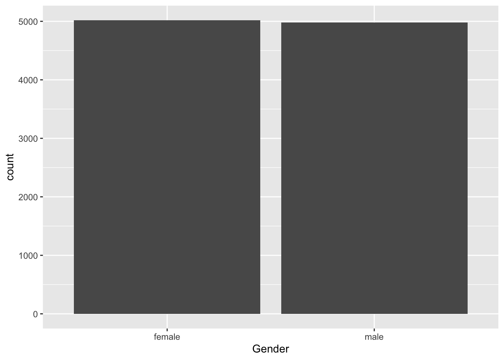
- Gender is een binaire variabele.
- Het volgt een Bernoulli verdeling.
- De Bernoulli verdeling heeft een parameter: het gemiddelde \(\pi\).
- We kunnen \(\pi\) schatten op basis van de steekproef door het steekproefgemiddelde te berekenen \(\bar x = \sum\limits_{i=1}^n x_i\)
- Merk op dat het steekproefgemiddelde zelf een toevallig veranderlijke is! Het wijzigt ook van steekproef tot steekproef!
NHANES |>
dplyr::count(Gender) |>
mutate(probability = n/sum(n))# A tibble: 2 × 3
Gender n probability
<fct> <int> <dbl>
1 female 5020 0.502
2 male 4980 0.4982.8 NHANES: Lengte
2.8.1 Empirische verdeling
We kunnen de verdeling van de lengte voor volwassen vrouwen schatten aan de hand van het histogram.
NHANES |>
filter(Gender=="female"&!is.na(Height)&Age>18) |>
ggplot(aes(x=Height)) +
geom_histogram()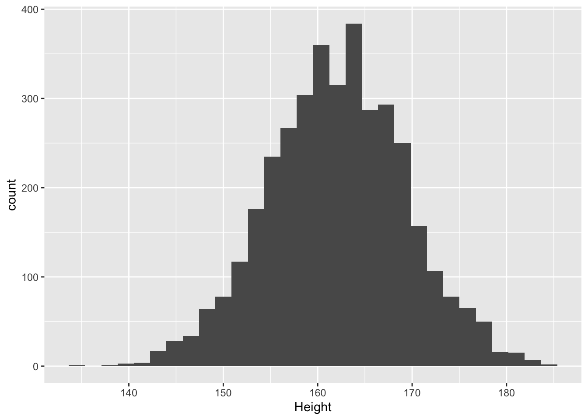
We kunnen de cumulatieve distributie functie schatten door gebruik te maken van de empirische cumulatieve distributie functie.
- Elke observatie werd één keer geobserveerd in het staal.
- Dus empirische cumulatieve distributie functie van het staal is een discrete verdeling met probabiliteit 1/n op elke observatie.
- De empirische cumulatieve distributie functie (ECDF) is gegeven door
\[ECDF(x) = \sum\limits_{x_i \leq x} \frac{1}{n} = \frac{\# (x_i \leq x)}{n}\]
NHANES |>
filter(Gender=="female"&!is.na(Height)&Age>18) |>
ggplot(aes(x=Height)) +
stat_ecdf()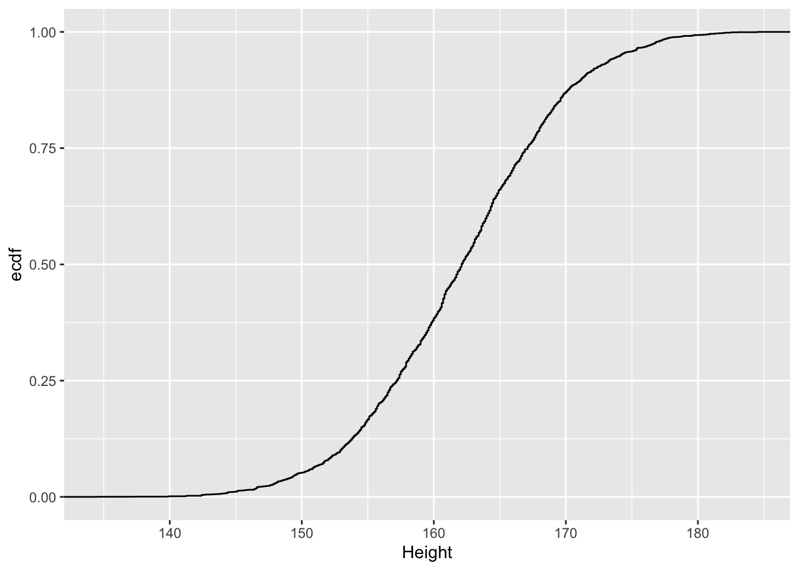
We kunnen de empirische cumulatieve distributie functie gebruiken om kansen te berekenen. Wat is de kans dat een vrouw kleiner is dan 150 cm.
ecdfFem <- NHANES |>
filter(Gender=="female"&!is.na(Height)&Age>18) |>
pull("Height") |>
ecdf()
ecdfFem(150)[1] 0.05222073We illustreren dit ook voor een steekproef van grootte 10
set.seed(502)
fem10<- NHANES |>
filter(Gender=="female"&!is.na(Height)&Age>18) |>
sample_n(size=10)
fem10 |>
ggplot(aes(x=Height)) +
stat_ecdf()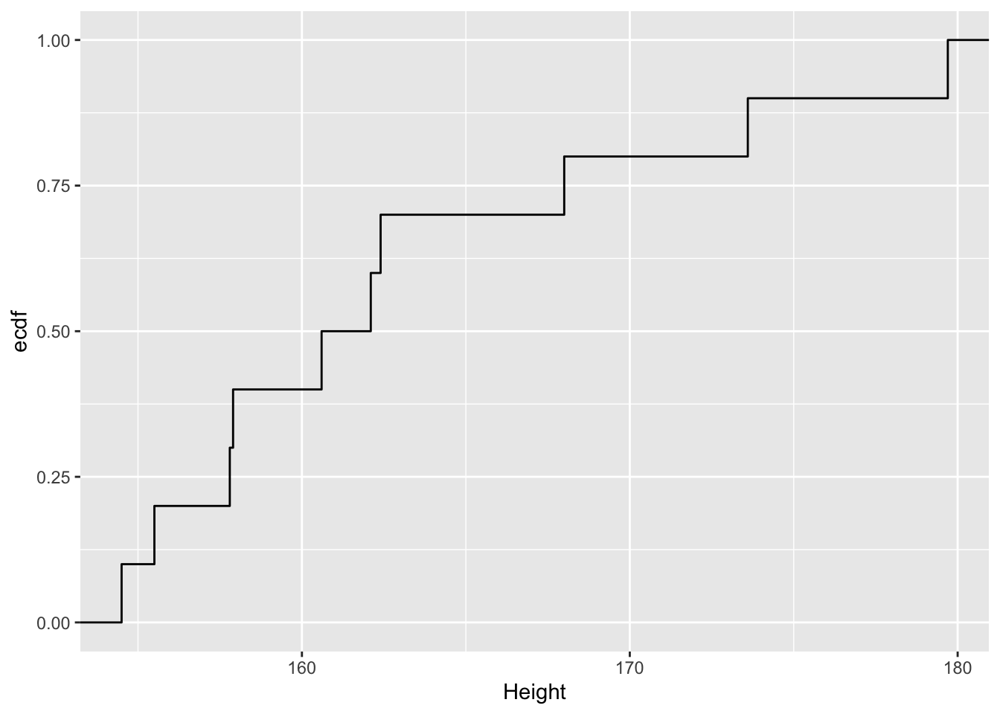
ecdfFem10 <- fem10 |>
pull(Height) |>
ecdf()
ecdfFem10(150)[1] 0Merk op dat die kans niet goed wordt geschat o.b.v. de kleine steekproef. Er zijn immers te weinig observaties om de kansen goed te kunnen schatten.
Merk ook op dat we die kans ook hadden kunnen schatten door te berekenen hoeveel lengtemetingen er lager zijn dan 150.
NHANES |>
filter(Gender=="female"&!is.na(Height)&Age>18) |>
dplyr::count(Height <=150) |>
mutate(prob=n/sum(n))# A tibble: 2 × 3
`Height <= 150` n prob
<lgl> <int> <dbl>
1 FALSE 3521 0.948
2 TRUE 194 0.0522ecdfFem(150)[1] 0.05222073fem10 |>
dplyr::count(Height <=150) |>
mutate(prob=n/sum(n))# A tibble: 1 × 3
`Height <= 150` n prob
<lgl> <int> <dbl>
1 FALSE 10 1ecdfFem10(150)[1] 02.8.2 Normale benadering
In de introductie zagen we dat de lengte metingen een mooie klokvorm hadden. We kunnen dus aannemen dat de metingen approximatief normaal verdeeld zijn. We zullen dat in hoofdstuk 4 Data Exploratie illustreren a.d.h.v. diagnostische plots.
We kunnen de verdeling van de lengte metingen ook benaderen d.m.v. een normale verdeling.
We moeten hiervoor enkel twee parameters schatten:
- gemiddelde via steekproefgemiddelde (\(\hat\mu=\bar x\))
- variantie via steekproefvariantie (\(\hat{\sigma}^2= s^2\)) of de standaardafwijking d.m.v. steekproef standaarddeviatie (\(\hat\sigma=s\)).
HeightSum <- NHANES |>
filter(Gender=="female"&!is.na(Height)&Age>18) |>
summarize(mean=mean(Height),sd=sd(Height))
HeightSum# A tibble: 1 × 2
mean sd
<dbl> <dbl>
1 162. 7.27We zien dat de benadering goed werkt:
NHANES |>
filter(Gender=="female"&!is.na(Height)&Age>18) |>
ggplot(aes(x=Height)) +
geom_histogram(aes(y=..density.., fill=..count..)) +
xlab("Lengte (cm)") +
stat_function(
fun=dnorm,
color="red",
args=list(
mean=HeightSum$mean[1],
sd=HeightSum$sd[1]
)
)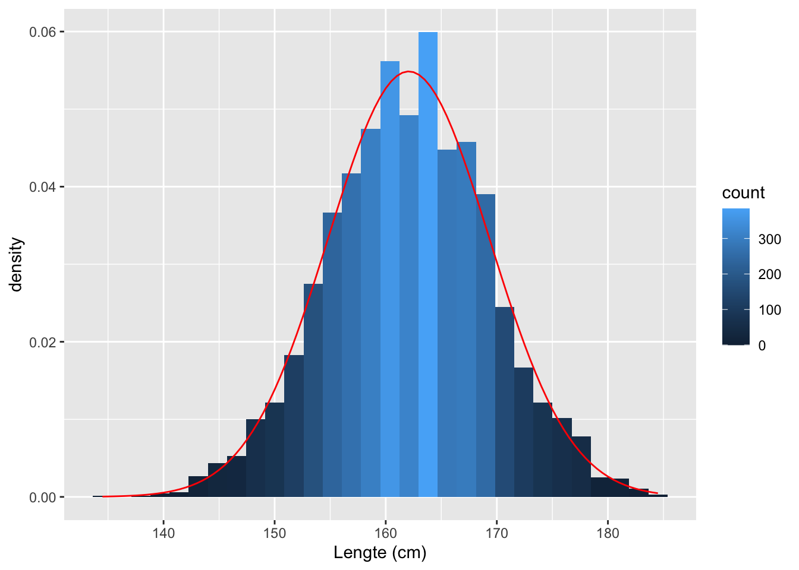
We doen nu hetzelfde op basis van de steekproef met de 10 vrouwen.
HeightSum10 <- fem10 |>
summarize(mean=mean(Height),sd=sd(Height))
HeightSum10# A tibble: 1 × 2
mean sd
<dbl> <dbl>
1 163. 8.19fem10 |>
ggplot(aes(x=Height)) +
geom_histogram(aes(y=..density.., fill=..count..),bins=10) +
xlab("Lengte (cm)") +
stat_function(
fun=dnorm,
color="red",
args=list(
mean=HeightSum10$mean[1],
sd=HeightSum10$sd[1]
)
) +
xlim(130,190)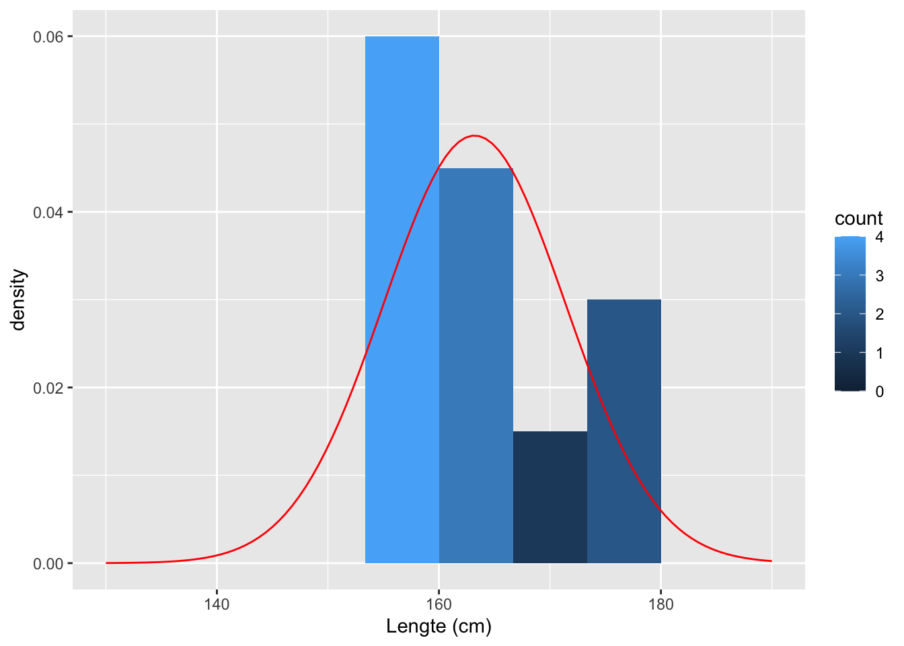
We kunnen de normale benadering nu ook gebruiken om de kans te berekenen dat een vrouw kleiner is dan 150 cm: Pr(X <= 150).
We doen dit op basis van de volledige steekproef en vergelijken dit uit wat we bekomen met de ECDF.
pnorm(150,HeightSum$mean[1],HeightSum$sd[1])[1] 0.0484516ecdfFem(150)[1] 0.05222073Op basis van de kleine steekproef bekomen we:
pnorm(150,HeightSum10$mean[1],HeightSum10$sd[1])[1] 0.05346615ecdfFem10(150)[1] 0Voor kleine steekproef is geschatte kans o.b.v. empirische verdeling veel minder nauwkeurig. Kwantielen geschat o.b.v. kleine steekproef zijn immers vrij onzeker. Ze gebruiken immers maar een fractie van de data.
De schatting o.b.v. de normale verdeling laat toe om alle data te gebruiken voor het schatten van de model parameters en is daarom nauwkeuriger. Uiteraard heeft de laatste aanpak de beperking dat de data Normaal verdeeld moeten zijn.
2.8.3 Referentie intervallen
Het bepalen van grenswaarden voor de lengte die vrij veel voorkomen kunnen worden bekomen door gebruik te maken van een referentie interval.
Typisch wordt een 95% referentie interval gebruikt zodat we voor 95% van de subjecten in de populatie verwachten dat ze een karakteristiek hebben die in het referentie interval ligt.
We kunnen dat opnieuw op basis van de empirische verdeling.
We moeten hiervoor \(\hat{F}(x_{2.5\%})=0.025\) en \(\hat{F}(x_{97.5\%})=0.975\) berekenen zodat 95% van de observaties in de steekproef vallen in het interval \([x_{2.5\%},x_{97.5\%}]\).
Dat kan met de
quantilefunctie.
Grote steekproef
NHANES |>
filter(Gender=="female"&!is.na(Height)&Age>18) |>
pull(Height) |>
quantile(prob=c(0.025,0.975)) 2.5% 97.5%
147.6 176.7 - Op basis van de grote steekproef schatten we dat 95% van de vrouwen in de populatie een lengte heeft die ligt in het interval [147.6, 176.7].
Kleine steekproef
fem10 |>
pull(Height) |>
quantile(prob=c(0.025,0.975)) 2.5% 97.5%
154.7250 178.3275 - Dit interval o.b.v. de kleine steekproef is een ruwe benadering.
- We hebben immers niet voldoende observaties om een goede benadering te hebben voor extreme quantielen.
2.8.3.1 Normale benadering
We kunnen de functie qnorm gebruiken om quantielen te berekenen van de normale verdeling. We weten dat een 95% referentie interval ongeveer binnen twee standaard deviaties rond het gemiddelde ligt.
We doen dit nu voor de - Grote steekproef
qnorm(0.025,mean=HeightSum$mean,sd=HeightSum$sd)[1] 147.8192HeightSum$mean - 2 * HeightSum$sd[1] 147.528qnorm(0.975,mean=HeightSum$mean,sd=HeightSum$sd)[1] 176.3237HeightSum$mean + 2 * HeightSum$sd[1] 176.6149- Kleine steekproef
qnorm(0.025,mean=HeightSum10$mean,sd=HeightSum10$sd)[1] 147.1499qnorm(0.975,mean=HeightSum10$mean,sd=HeightSum10$sd)[1] 179.2701We zien dat de benadering voor de kleine steekproef op basis van de aanname van Normaliteit opnieuw goed werkt!
2.8.4 Conclusies
Voor de grote steekproef geven de empirische verdeling en de normale benadering vergelijkbare resultaten.
Voor de kleine steekproef werkt de normale benadering beter dan de empirische verdeling.
- We kijken immers naar extreme quantielen 2.5% en 97.5%.
- Er zijn inderdaad weinig gegevens in de steekproef die toelaten om deze quantielen direct te schatten.
- Met de normale benadering kunnen we alle data gebruiken om het gemiddelde en de standaarddeviatie te schatten.
- Als de aanname van normaliteit geldt dan krijgen we betere schattingen voor deze kwantielen.
2.9 Statistieken
Formules die gebruikt worden om parameters van de verdeling in de populatie te schatten op basis van de steekproef, alsook het numerieke resultaat dat men bekomt door deze formules te evalueren, worden statistieken genoemd. Bijvoorbeeld het rekenkundig gemiddelde van alle systolische bloeddrukwaarden voor de verschillende subjecten in de steekproef, is een statistiek. Statistieken zijn dus wat de onderzoekers observeren of kunnen berekenen o.b.v. de gegevens in de steekproef; parameters zijn wat ze eigenlijk willen weten. Omdat statistieken berekend worden op basis van de gegevens uit de steekproef, zullen ze variëren van steekproef tot steekproef. We zullen ze daarom noteren met een hoofdletter (bvb. \(\bar X\) voor het steekproefgemiddelde), tenzij we verwijzen naar de numerieke waarde die gerealiseerd wordt in een bepaalde steekproef, in welk geval we een kleine letter gebruiken (bvb. \(\bar x\) voor het steekproefgemiddelde).
2.10 Conventie
Belangrijke Conventie: In de cursus gebruiken we de conventie om populatieparameters die een vaste waarde aannemen maar die meestal ongekend zijn voor te stellen door Griekse symbolen. Statistieken waarmee we deze ongekende parameters schatten o.b.v. een steekproef zullen we weergeven door letters.
Voor de normaal verdeling hebben we dus:
| Populatie | Steekproef |
|---|---|
| \(\mu\) | \(\bar X\) |
| \(\sigma^2\) | \(S^2\) |
Om hetgeen we in de steekproef observeren te kunnen veralgemenen naar de populatie, zullen we gebruik moeten maken van methodes uit de statistische besluitvorming wat in latere hoofdstukken aan bod komt.
De cursus is als volgt georganiseerd: In hoofdstuk 3 verdiepen we ons in studiedesign. Vervolgens gaan we in op data-exploratie in hoofdstuk 4, hierbij zullen we de gegevens in een steekproef grondig exploreren zodoende inzicht te verwerven in de data en hoe we ze statistisch kunnen modelleren. In hoofdstuk 5 introduceren we de grondslagen van statistische besluitvorming die het ons mogelijk maakt om effecten die we observeren in de steekproef te kunnen veralgemenen naar de populatie toe. In hoofdstukken 6–Hoofdstuk 10 zullen we meer geavanceerde statistische modellen en methoden introduceren om data te modelleren en voor statistische besluitvorming.
2.11 Code voor dit hoofdstuk
- Continue Toevallige Veranderlijken:
- Lengte voorbeeld:
B.v. omdat het ook toekomstige subjecten omvat↩︎
Hierbij maken we gebruik van het feit dat voor een Normaal verdeelde observatie \(X\), \(P(X=a)=0\) voor elk reëel getal \(a\), zodat \(P(X\leq a)=P(X<a)\).↩︎
Let wel op want in verschillende boeken krijgt het symbool \(z_{\alpha}\) verschillende definities!↩︎
Dit interval bevat niet exact \((1-\alpha)100\%\) van de observaties, maar slechts bij benadering, omdat het geen rekening houdt met het feit dat \(\bar x\) en \(\sigma_x\) impreciese schattingen zijn voor \(\mu\) en \(\sigma\) op basis van een eindige steekproef. Meer accurate referentie-intervallen die deze imprecisie in rekening brengen, ook predictie-intervallen genoemd↩︎